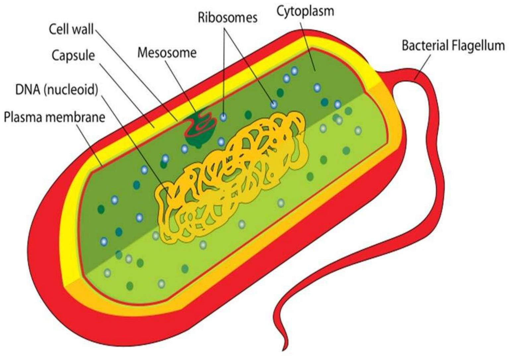

Eukaryotic and Prokaryotic Cell Structure
Eukaryotes
They have cells that contain a membrane bound nucleus and organelles.ie protozoa, plant, fungi, and animals
Characteristics of eukaryotic cell
- have the nucleus enclosed within the nuclear membrane.
- The cell has mitochondria.
- Have Flagella and cilia for locomotion
- A cell wall is the outermost layer
- The cells divide by a process called mitosis.
- The eukaryotic cells contain a cytoskeletal structure.
- The nucleus contains a single, linear DNA, which carries all the genetic information
Eukaryote cell

Plasma Membrane
- The plasma membrane separates the cell from the outside environment.
- It comprises specific embedded proteins, which help in the exchange of substances in and out of the cell.
Cell Wall
- A cell wall is a rigid structure present outside the plant cell. It is, however, absent in animal cells.
- It provides shape to the cell and helps in cell-to-cell interaction.
- It is a protective layer that protects the cell from any injury or pathogen attacks.
- It is composed of cellulose, hemicellulose, pectins, proteins, etc.
Also refer: Cell Wall
Cytoskeleton
The cytoskeleton is present inside the cytoplasm consisting microfilaments, microtubules, and fibres to provide perfect shape to the cell, anchor the organelles, and stimulate the cell movement.
Endoplasmic Reticulum
It is a network of small, tubular structures that divides the cell surface into two parts: luminal and extraluminal.
Endoplasmic Reticulum is of two types:
- Rough Endoplasmic Reticulum contains ribosomes.
- Smooth Endoplasmic Reticulum that lacks ribosomes and is smooth.
Nucleus
- The nucleoplasm enclosed within the nucleus contains DNA and proteins.
- The nuclear envelop consists of two layers- the outer membrane and the inner membrane. Both the membranes are permeable to ions, molecules, and RNA material.
- Ribosome production also takes place inside the nucleus.
Golgi Apparatus
- It is made up of flat disc-shaped structures called cisternae.
- It is absent in red blood cells of humans and sieve cells of plants.
- They are arranged parallel and concentrically near the nucleus.
- It is an important site for the formation of glycoproteins and glycolipids.
Ribososm
These are the main site for protein synthesis and are composed of proteins and ribonucleic acid
Mitochondria
- These are also known as "powerhouse of cells" because they produce energy.
- It consists of an outer membrane and an inner membrane. The inner membrane is divided into folds called cristae.
- They help in the regulation of cell metabolic
lysosomes
They are known as "suicidal bags" because they possess hydrolytic enzymes to digest protein, lipids, carbohydrates, and nucleic acids.
plastids
These are double-membraned structures and are found only in plant cells. These are of three types:
- Chloroplast that contains chlorophyll and is involved in photosynthesis.
- Chromoplast that contains a pigment called carotene that provides the plants yellow, red, or orange colours.
- Leucoplasts that are colourless and store oil, fats, carbohydrates, or proteins.
prokaryotes
They are cells that do not have a true nucleus and membrane-bound organelles." Prokaryotes include Bacteria and Archaea. The photosynthetic prokaryotes include cyanobacteria that perform photosynthesis. Their cell consists of a single membrane and therefore, all the reactions occur within the cytoplasm. They can be free-living or parasites.
- They lack a nuclear membrane, Mitochondria, Golgi bodies, chloroplast, and lysosomes
- The genetic material is present on a single chromosome.
- The histone proteins, the important constituents of eukaryotic chromosomes, are lacking in them.
- The cell wall is made up of carbohydrates and amino acids.
- The plasma membrane acts as the mitochondrial membrane carrying respiratory enzymes.
- They divide asexually by binary fission. The sexual mode of reproduction involves conjugation
Prokaryote cell structure
Structures of prokaryotes
- Capsule- It is an outer protective covering found in the bacterial cells, in addition to the cell wall. It helps in moisture retention, protects the cell when engulfed, and helps in the attachment of cells to nutrients and surfaces.
- Cell Wall- It is the outermost layer of the cell which gives shape to the cell.
- Cytoplasm- The cytoplasm is mainly composed of enzymes, salts, cell organelles and is a gel-like component.
- Cell Membrane- This layer surrounds the cytoplasm and regulates the entry and exit of substances in the cells.
- Pili- These are rod hair-like outgrowths that transfer genetic material, locomotion and attach to the surface of other bacterial cells.
- Fimbriae- are numerous, hair-like structures that are used for attachment to host cells and other surfaces
- Flagella- These are long structures in the form of a whip, that help in the locomotion of a cell.
- Ribosomes- These are involved in protein synthesis.
- Plasmids- Plasmids are non-chromosomal DNA structures. These are not involved in reproduction.
- Nucleoid Region- It is the region in the cytoplasm where the genetic material is present.
NOTE: A prokaryotic cell lacks certain organelles like mitochondria, endoplasmic reticulum, and Golgi bodies.
prokaryotic cells have four main components:
Plasma Membrane- It is an outer protective covering of phospholipid molecules which separates the cell from the surrounding environment.
Cytoplasm- It is a jelly-like substance present inside the cell. All the cell organelles are suspended in it.
DNA- It is the genetic material of the cell. All the prokaryotes possess a circular DNA. It directs what proteins the cell creates. It also regulates the actions of the cell.
Ribosomes- Protein synthesis occurs here.